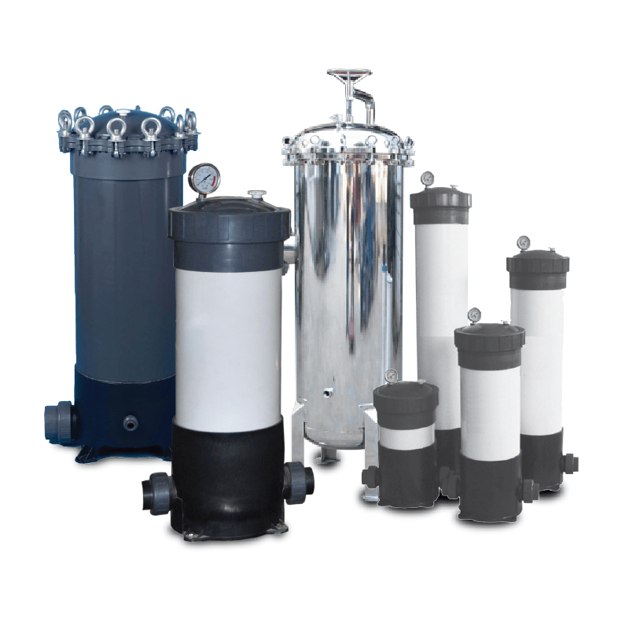

Micron Filters (Cartridges) are used for filtration to remove fine particles and contaminants from water or other fluids. They are commonly used in various industries, including water treatment, pharmaceuticals, and food processing. These filters come in various micron ratings to meet the filtration requirements of different applications.
Overview
Micron Filters (Cartridges) are designed to filter out small particles and contaminants from water and other liquids. Available in various micron ratings, these filters provide excellent filtration performance, offering protection to downstream equipment and ensuring the purity of the fluid. They are used in a wide range of industries where fine filtration is essential.
Features
- Various Micron Ratings: Available in different micron sizes to remove particles of varying sizes.
- High Filtration Efficiency: Provides superior filtration to remove fine contaminants and particles.
- Durable Construction: Made from materials such as polypropylene, stainless steel, or fiberglass for long-lasting performance.
- Easy to Replace: Simple design for easy replacement without needing special tools.
- Versatile Applications: Can be used for water filtration, chemicals, oils, and other fluids in various industries.
Process
The micron filtration process includes the following steps:
- Water or Fluid Inlet: The fluid enters the filter cartridge, which is designed to trap particles of a specific size.
- Filtration: The micron filter captures small particles, suspended solids, bacteria, and other contaminants from the fluid.
- Efficient Removal: The contaminants are trapped in the filter media, and the purified fluid exits the filter system.
- Replacement: Once the filter is clogged with contaminants, it is removed and replaced with a new cartridge.

Applications
- Water Treatment: Used for removing particulate matter, sediments, and fine impurities from drinking and industrial water.
- Pharmaceutical Industry: Ensures the removal of contaminants from fluids used in pharmaceutical manufacturing.
- Food and Beverage: Filters used in processing to ensure product purity and hygiene.
- Chemical and Oil Industries: Employed to filter oils, chemicals, and other industrial liquids for effective processing.
- Pre-filtration: Used as a pre-filtration step before other filtration methods, such as reverse osmosis.